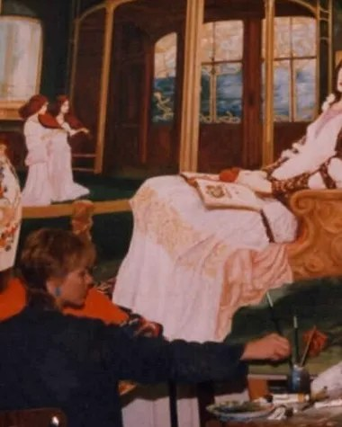

Titres, formats et prix repris de son site actuel. Chaque toile est accrochée à l'échelle de son format réel.
Ses toiles font partie de collections privées dans sept pays.
Pour acquérir une toile ou commander un tableau, écrivez à Leith :
contact.leithridley@gmail.comUne sélection de plus de cent toiles est aussi en vente sur Singulart ↗